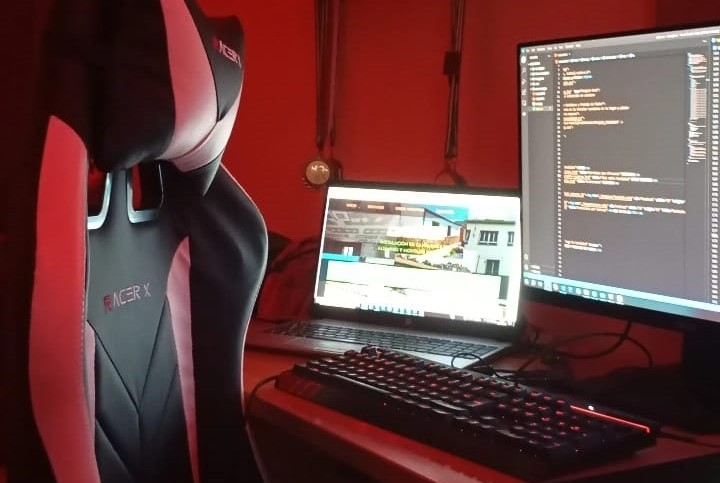

Hola, mi nombre es
Javier Ruiz
Front-end developer | Web
building web from Córdoba to the world

Mi historia
Mi nombre es Javier Ruiz, soy un estudiante informático y amante de la tecnología.
Desde 2021, he estudiado informática y me especialize en 2023 como desarrollador de aplicaciones web. Ocupando mis 2 últimos años a estudiar las tecnologias web principales y tocando un poco de back-end.
En el ultimo año he estado aprendido JavaScript para aprender las bases y actualmente estoy aprendiendo angular. Soy un amante a aprender nuevas tecnologias y hacerme experto en ellas.
Si estás buscando profesionalidad y dedicación, ¡cuenta conmigo!